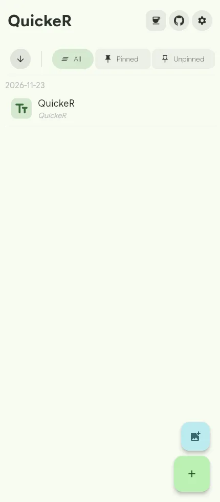
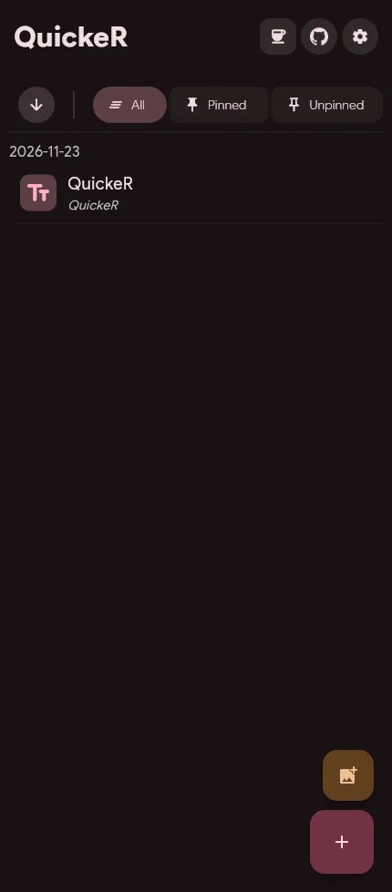
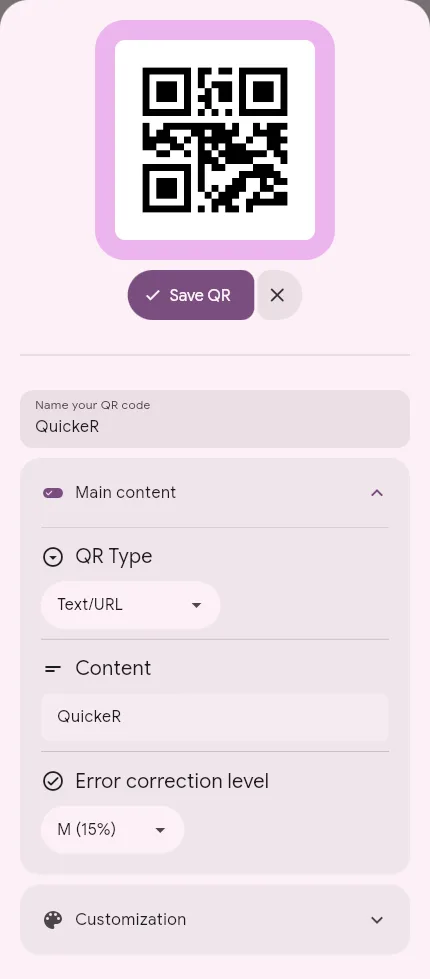
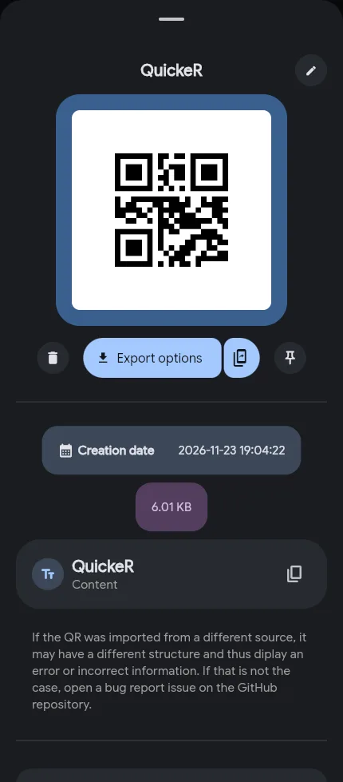
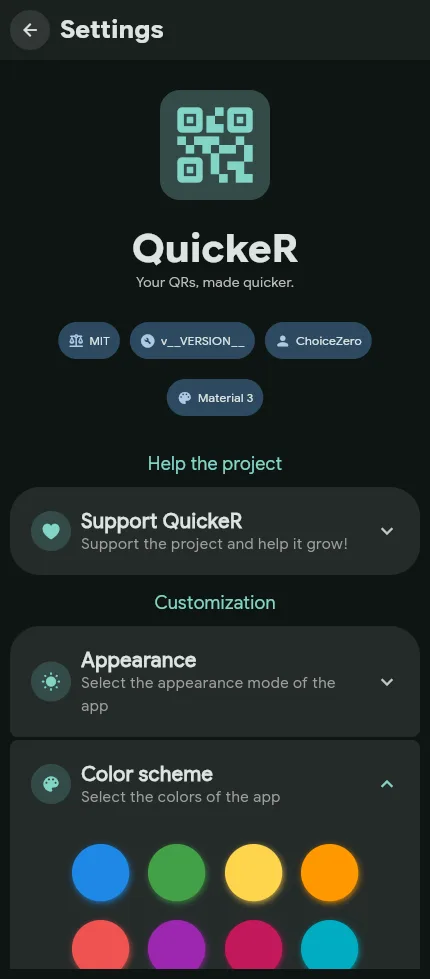
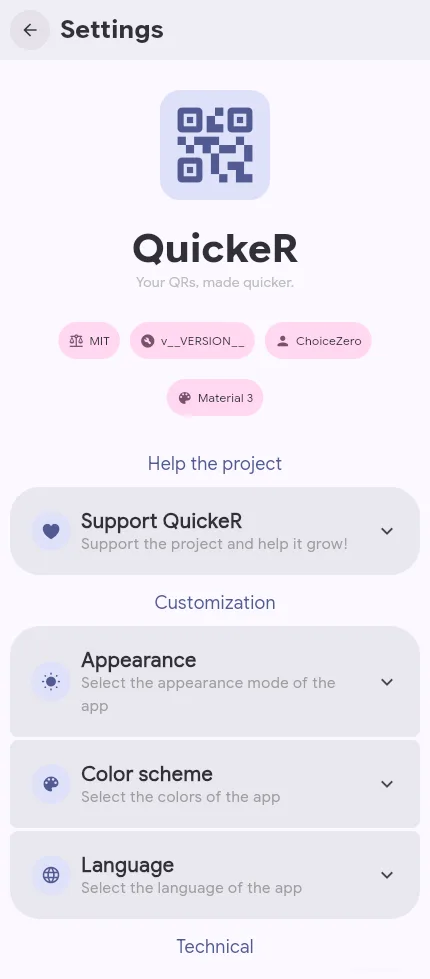
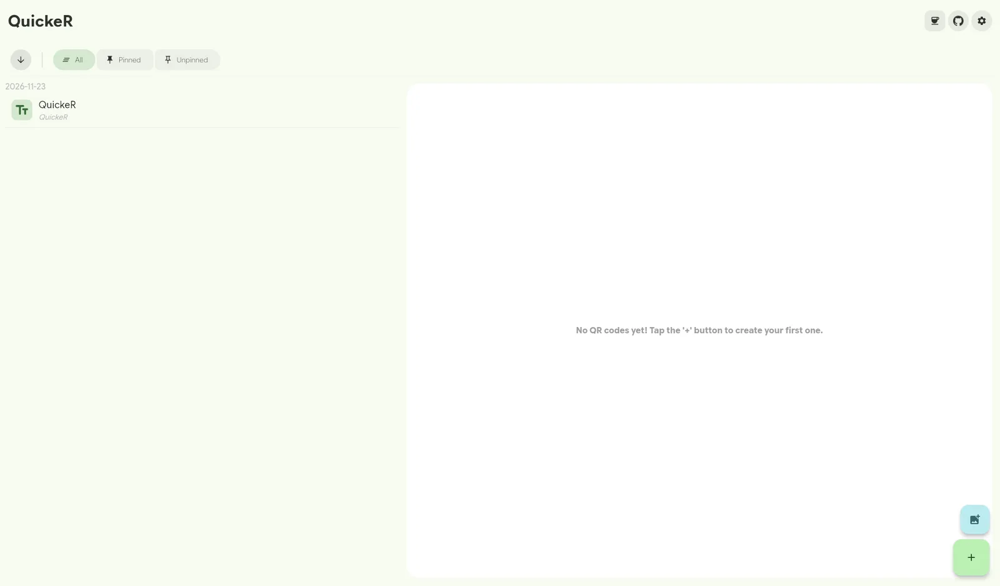

qr_code_2
Eight kinds of code
Text and links, Wi-Fi, email, SMS, phone numbers, map locations, calendar events and contact cards (vCard). Each one gets its own form, so you never write WIFI:T:WPA;S:… by hand.
QuickeR makes QR codes for links, Wi-Fi, contacts, events and more. No account, no limits, no ads, no purchases. Nothing about you leaves your device.




Most QR sites want something back. A sign-up, a watermark, a paywall after 14 days, a tracking link in your code. QuickeR was built out of spite for all of that.
The preview updates on every keystroke, and you see a summary before you save.
Text and links, Wi-Fi, email, SMS, phone numbers, map locations, calendar events and contact cards (vCard). Each one gets its own form, so you never write WIFI:T:WPA;S:… by hand.
Pick the foreground and background. If the pair has low or moderate contrast, QuickeR warns you before you save a code that phones can't read.
Drop your logo in the center. Error correction goes up to level H automatically, so the code keeps scanning with a chunk of it covered.
Export any code as an .STL model, with the dark modules raised or indented. Ready for your slicer, a coaster or a door sign.
Every code you make is saved. Pin the ones you use most, filter by pinned, flip the order, rename tags and copy the raw content in one tap.
Add QR images you got elsewhere (PNG, JPG, WEBP, SVG) and QuickeR decodes them. Move your whole library between devices as one .ZIP.
Export to a folder, straight to your phone's gallery, or share it from the details sheet. Images are always clean PNGs.
English, Español, Euskara, Français, Deutsch, Português and Italiano. Switch in Settings and the app changes on the spot.
Light, dark or follow the system, with an accent color of your choice. Separate layouts for phones and big screens. Try the palette button up top.
A small taste of the app. It runs entirely in your browser: nothing you type is sent anywhere.
QuickeR switches layout with the size of the window. Shown in a mix of the accent colors you can pick.



Library and details side by side, so you can browse and inspect without leaving the list.
https://github.com/ChoiceZero/QuickeR and pick GitHub as the source. It'll fetch new APKs as they're released. If Android refuses to update over a build from v1.1.2 or earlier, uninstall the old one once: those were each signed with a different key. Every build since is signed with the same one.src/translations.json, with English as the key. Fix an entry or add a whole language, run python scripts/check_translations.py, and open a pull request.QuickeR is made by one person in the Basque Country, mostly by hand. A star, a share or a coffee all make a difference.